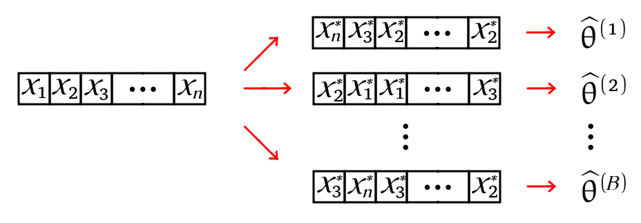
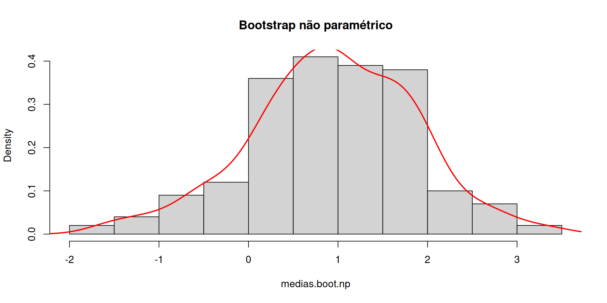
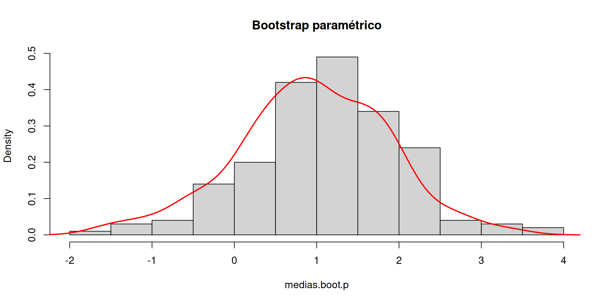

ESTAT0090 – Estatística Computacional Prof. Dr. Sadraque E. F. Lucena sadraquelucena@academico.ufs.br
Motivação
Fazer inferências com amostras pequenas é muito difícil, principalmente quando a distribuição da população não é conhecida. Nesses casos, os métodos estatísticos tradicionais podem não ser adequados ou aplicáveis. Uma alternativa é usar o método bootstrap.
Objetivos da aula
Apresentar o método de reamostragem Bootstrap como uma alternativa para fazer inferência em situações com amostras pequenas.
Ensinar a usar o método Bootstrap para estimar a distribuição, o erro padrão, o viés e calcular intervalos de confiança para estimadores estatísticos.
Demonstrar a aplicação do Bootstrap com exemplos práticos, comparando seus resultados com os de métodos analíticos tradicionais (quando disponíveis).
Introduzir o uso do pacote boot no R para realizar a reamostragem Bootstrap.
Bootstrap: Introdução
Quando se deseja fazer inferência sobre um estimador, é essencial conhecer a sua distribuição.
Há duas formas de determinar a distribuição do estimador:
Conhecendo a distribuição original dos dados;
Obtendo aproximação usando resultados assintóticos quando o tamanho da amostra é suficientemente grande.
No entanto, quando lidamos com amostras pequenas e não temos informações suficientes sobre a distribuição da população da qual a amostra foi retirada, os métodos estatísticos tradicionais podem não ser apropriados. É aí que entram os métodos bootstrap.
Bootstrap envolve o tratamento da amostra que temos como uma representação aproximada da população. Com base nessa amostra, criamos várias amostras artificiais e aplicamos o estimador, obtendo uma estimativa para cada uma dessas amostras artificiais.
Bootstrap: Introdução
Usando essas estimativas artificiais, podemos construir uma aproximação empírica da distribuição de probabilidade do estimador.
Dessa forma, o método bootstrap nos permite estimar a variabilidade e a incerteza associadas ao nosso estimador, mesmo quando não conhecemos a distribuição exata da população subjacente.
Ele é particularmente útil em situações em que os métodos estatísticos clássicos não podem ser aplicados devido ao tamanho pequeno da amostra ou à falta de informações sobre a população.
Bootstrap: Introdução
O método Boostrap foi apresentado de forma sistematizada por Efron em 1979.
Principais aplicações de bootstrap:
Avaliar propriedades da distribuição de estimadores para seleção, ajuste de vício, etc.
Substituir ou aprimorar a adequação de abordagens assintóticas em amostras pequenas: intervalos de confiança, testes de hipótese.
Bootstrap: funcionamento
Suponha que \(\theta\) é o parâmetro de interesse (\(\theta\) pode ser um vetor) e \(\widehat{\theta}\) é um estimador de \(\theta\). Então a estimativa bootstrap da distribuição de \(\theta\) (distribuição empírica) é obtida da seguinte forma:
Para cada réplica bootstrap, indexada por \(b=1,\ldots,B\):
Gere a amostra \(x^{*(b)} = x^*_1, \ldots, x^*_n\) (mesmo tamanho da amostra original); b. Calcule \(\widehat{\theta}^*_{b}\) a partir da amostra \(x^{*(b)}\).
A distribuição empírica de \(\theta\) será \(\widehat{\theta}^*_{1},\ldots,\widehat{\theta}^*_{B}\).
Se a amostra \(x^*_b\) for gerada a partir de uma amostragem com reposição dos dados originais, o método é chamado bootstrap não paramétrico.
Se a amostra \(x^*_b\) for gerada a partir de uma distribuição conhecida, o método é chamado bootstrap paramétrico.
Bootstrap: funcionamento
No caso do bootstrap não paramétrico (não se sabe a distribuição dos dados):
\(x = (x_1,\ldots,x_n)\) é a amostra original da qual foi obtido \(\widehat{\theta}\).
Para cada réplica bootstrap, indexada por \(b=1,\ldots,B\):
Gere a amostra \(x^{*(b)} = x^*_1, \ldots, x^*_n\) a partir de amostragem com reposição de \(x\);
Calcule \(\widehat{\theta}^{(b)}\) para a amostra \(x^{*(b)}\).
A distribuição empírica de \(\theta\) será \(\widehat{\theta}^*_1,\ldots,\widehat{\theta}^*_b\).

Bootstrap: funcionamento
No caso do bootstrap paramétrico: (a distribuição dos dados é \(\mathfrak{D}(\gamma)\), mas não se sabe o valor de \(\gamma\))
\(x = (x_1,\ldots,x_n)\) é a amostra original da qual foi obtido \(\widehat{\theta}\).
Obtenha a estimativa do parâmetro desconhecido da distribuição, \(\widehat{\gamma}\).
Para cada réplica bootstrap, indexada por \(b=1,\ldots,B\):
Gere a amostra \(x^{*(b)} = x^*_1, \ldots, x^*_n\) com distribuição \(\mathfrak{D}(\widehat{\gamma})\);
Calcule \(\widehat{\theta}^*_b\) para a amostra \(x^{*(b)}\).
A distribuição empírica de \(\theta\) será \(\widehat{\theta}^*_1,\ldots,\widehat{\theta}^*_B\).
Estimação bootstrap do erro padrão
A estimativa bootstrap do erro padrão de um estimador \(\widehat{\theta}\) é o desvio padrão amostraldas réplicas bootstrap \(\widehat{\theta}^{(1)}, \ldots, \widehat{\theta}^{(B)}\)\[
dp(\widehat{\theta}^*) = \sqrt{\frac{1}{B-1} \sum\limits_{b=1}^B \left( \widehat{\theta}^*_b - \overline{\widehat{\theta}^*} \right)^2},
\] em que \[
\overline{\widehat{\theta}^*} = \sum\limits_{b=1}^B \widehat{\theta}^*_b.
\]
Segundo Efron e Tibishirani, o número de réplicas necessárias para boa estimação do erro padrão não pe grande.
\(B=50\) geralmente é grande o suficiente e raramente \(B>200\) é necessário (para intervalos de confiança esse número é maior).
Estimação bootstrap do erro padrão
Para ilustrar a simplicidade do bootstrap, usaremos essa técnica para obter o erro padrão em uma situação muito simples, na qual sabemos como calcular um erro padrão analiticamente.
Dessa forma, podemos comparar o resultado obtido pelo bootstrap com o obtido pela fórmula analítica.
Normalmente usaremos o bootstrap em situações em que não temos um erro padrão analítico disponível.
Exemplo 17.1
Gere uma amostra de tamanho 100 de \(X\sim N(\mu=0, \sigma^2= 100)\). Determine o erro padrão e estime-o via bootstrap não paramétrico e paramétrico para comparação.
O verdadeiro erro padrão da média amostral é \(dp(\overline{X})=\frac{\sigma}{\sqrt{n}} = \frac{10}{\sqrt{100}} = 1\)
Vejamos como ficam as estimativas via bootstrap não paramétrico e paramétrico.
Exemplo 17.1
# fixando a semente para reprodutibilidadeset.seed(61231601)# Amostran <-100# tamanho da amostraamostra <-rnorm(n, mean =0, sd =10)# Erro padrão amostral( ep <-sd(amostra)/sqrt(n) )
[1] 0.9800282
O pacote boot
O erro padrão botstrap não paramétrico pode ser obtido no R usando a função boot() do pacote boot.
O Exemplo 17.1 pode ser refeito usando o código abaixo:
### Usando o pacote "boot"media.boot <-function(x, i) mean(x[i])library(boot)boot(data = amostra, statistic = media.boot, R =200)
B <-200# número de réplicas bootstrap# função que obtem uma amostra bootstrap não paramétrica e calcula a médiamedia.np <-function(x) { amstr <-sample(x, size = n, replace =TRUE)return(mean(amstr))}medias.boot.np <-replicate( B, media.np(amostra) )# Estimativa do erro padrão( ep.boot.np <-sd(medias.boot.np) )
[1] 0.9211583
Exemplo 17.1
hist(medias.boot.np, freq =FALSE,main ="Bootstrap não paramétrico")lines(density(medias.boot.np), col ="red", lwd =2)

Exemplo 17.1
## Bootstrap paramétricoB <-200# número de réplicas bootstrap# função que obtem uma amostra bootstrap paramétrica e calcula a médiamedia.p <-function(x) { m <-mean(x) # media dp <-sd(x) # desvio padrão# amostra bootstra paramétrica amstr <-rnorm(n, mean = m, sd = dp)return(mean(amstr))}medias.boot.p <-replicate( B, media.p(amostra) )# Estimativa do erro padrãosd(medias.boot.p)
[1] 0.9090239
Exemplo 17.1
hist(medias.boot.p, freq =FALSE,main ="Bootstrap paramétrico")lines(density(medias.boot.np), col ="red", lwd =2)

Estimação do viés via bootstrap
Se \(\widehat{\theta}\) é um estimador não viesado para \(\theta\), então \(E[\widehat{\theta}] = \theta\). O viés de um estimador \(\widehat{\theta}\) de \(\theta\) é \[
B[\widehat{\theta}] = E[\widehat{\theta} - \theta] = E[\widehat{\theta}]- \theta
\]
Se obtivermos várias estimativas bootstrap (\(\widehat{\theta}^{(1)},\ldots,\widehat{\theta}^{(B)}\)) para compreender a distribuição de \(\widehat{\theta}\), então a estimativa de viés bootstrap é \[
\widehat{B}[\widehat{\theta}] = \overline{\widehat{\theta}^*} - \widehat{\theta},
\] em que \(\widehat{\theta}\) é a estimativa calculada da amostra original.
Valores positivos de viés indicam que, em média, tende a sobrestimar \(\theta\).
Correção de viés via bootstrap
Se um estimador é viesado gostaríamos de “corrigir” este estimador fazendo \[
\theta - B[\widehat{\theta}].
\]
Se usarmos uma estimativa bootstrap do viés, temos: \[
\theta - \widehat{B}[\widehat{\theta}].
\]
Assim, uma estimativa \(\widehat{\theta}^c\) para \(\theta\) corrigida pelo viés é \[
\begin{aligned}
\widehat{\theta}^c &= \widehat{\theta} - \widehat{B}[\widehat{\theta}]\\
&= \widehat{\theta} - \left( \overline{\widehat{\theta}^*} - \widehat{\theta} \right)\\
&= 2 \widehat{\theta} - \overline{\widehat{\theta}^*},
\end{aligned}
\] ou seja, a estimativa corrigida é dada pelo dobro da original subtraída da médas das estimativas das amostras bootstrap.
Exemplo 17.2
Vamos estimar o viés de \(S^2\) usando bootstrap em uma amostra de tamanho 40 da \(N(\mu=5, \sigma^2 = 4)\).
# Fixando a semente para reprodutibilidadeset.seed(61231801)# Amostran <-100# tamanho da amostradados <-rnorm(n, mean =5, sd =2)# Variância da amostra( var.dados <-var(dados) )
[1] 3.856463
Exemplo 17.2
## Bootstrap não paramétricoB <-1000# número de réplicas bootstrap# função que obtem uma amostra bootstrap não# paramétrica e calcula a variânciavariancia.boot <-function(x) { amstr <-sample(x, size = n, replace =TRUE)return(var(amstr))}var.boot.np <-replicate( B, variancia.boot(dados) )# Estimativa bootstrap da variância ( var.np <-mean(var.boot.np) )
[1] 3.822395
Exemplo 17.2
# Viés( vies <- var.np - var.dados )
[1] -0.03406886
# Estimativa corrigido o viés por bootstrap( est <-2*var.dados - var.np )
[1] 3.890532
## Usando a função "boot"var.amostral <-function(x, i)return( var(x[i]) )( var_boot <-boot(dados, var.amostral, B) )
ORDINARY NONPARAMETRIC BOOTSTRAP
Call:
boot(data = dados, statistic = var.amostral, R = B)
Bootstrap Statistics :
original bias std. error
t1* 3.856463 -0.02316833 0.4616322
Intervalos de confiança bootstrap
Intervalo percentil
Este é o intervalo de confiança bootstrap mais simples.
Se quisermos obter um intervalo com 95% de confiança, o algoritmo é o seguinte:
Os limites do intervalo serão os valores correspondentes aos percentis 2,5% e 97,5%.
Ou seja, o intervalo com \(100(1-\alpha)\%\) de confiança é \[
\left( \widehat{\theta}^*_{\alpha/2}, \widehat{\theta}^*_{1-\alpha/2} \right)
\]
Exemplo 17.3
Obtenha um intervalo de confiança bootstrap de 95% para a variância do Exemplo 17.2 usando o método percentil.
quantile(var.boot.np, probs =c(.25, .975))
25% 97.5%
3.492012 4.819677
# Usando a função boot.ciboot.ci(var_boot, conf =0.95, type ="perc")
BOOTSTRAP CONFIDENCE INTERVAL CALCULATIONS
Based on 1000 bootstrap replicates
CALL :
boot.ci(boot.out = var_boot, conf = 0.95, type = "perc")
Intervals :
Level Percentile
95% ( 2.969, 4.732 )
Calculations and Intervals on Original Scale
Intervalos de confiança bootstrap
Outros intervalos bootstrap
Intervalo normal padrão (usa o erro padrão bootstrap)
Bootstrap-t (gera valores t artificiais)
Básico (usa os percentis com viés corrigidos)
BCa (melhor intervalo de confiança, mas precisa de muitas réplicas)
Para usá-los na função boot.ci, use o argumento type = "all"
Exemplo 14.4
Obtenha intervalos de confiança bootstrap de 95% para a variância do Exemplo 17.2 considerando todos os cinco métodos.
# Usando a função boot.ciboot.ci(var_boot, conf =0.95, type ="all")
BOOTSTRAP CONFIDENCE INTERVAL CALCULATIONS
Based on 1000 bootstrap replicates
CALL :
boot.ci(boot.out = var_boot, conf = 0.95, type = "all")
Intervals :
Level Normal Basic
95% ( 2.975, 4.784 ) ( 2.981, 4.744 )
Level Percentile BCa
95% ( 2.969, 4.732 ) ( 3.039, 4.877 )
Calculations and Intervals on Original Scale
Exemplo 17.5
Os dados abaixo correspondem à notas obtidas na admissão em uma universidade americana (LSAT) e o coeficiente de rendimento médio ao final do curso (GPA).
LSAT
576
635
558
578
666
580
555
661
651
605
653
575
545
572
594
GPA
339
330
281
303
344
307
300
343
336
313
312
274
276
288
296
Obtenha a correlação amostral entre as duas variáveis. Calcule uma estimativa bootstrap para o viés e o erro padrão dessa correlação. Obtenha também intervalos de confiança boostrap. Use boostrap não paramétrico e considere \(B = 2000\).
Esses dados pertencem ao pacote bootstrap e chama-se law.
Exemplo 17.5
# Os dados estão no banco 'law' do pacote 'bootstrap'library(bootstrap)law
# Definições para o bootstrapB <-2000# número de réplicasn <-nrow(dados) # tamanho da amostraR <-numeric(B) # guardará as estimativas bootstrap# calcula a correlação entre as colunas 1 e 2r <-function(x, i)cor(x[i,1], x[i,2])
Exemplo 17.5
library(boot) # para a função bootobj <-boot(data = law, statistic = r, R =2000)obj